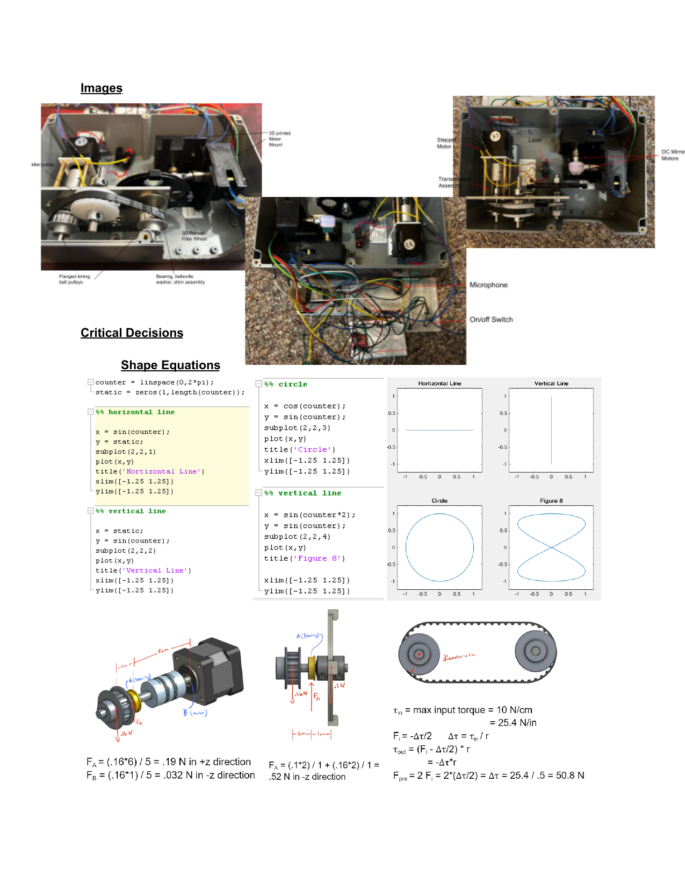
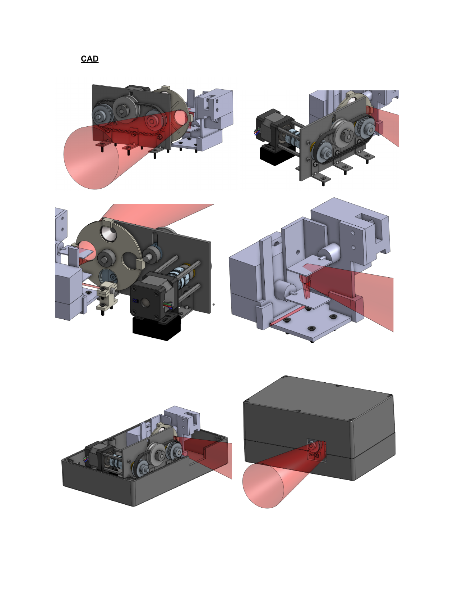

Sound-Reactive Laser Light Show
A portable laser display device that projects 2D shapes onto a wall and cycles through patterns in real time based on the beat of the music.
Overview
A sound-reactive laser light show built for the UC Berkeley ME102b Mechatronics Design course. A single laser is deflected across two single-axis mirrors — one controlling the x-axis, one the y-axis — each driven by a high-speed DC motor. The mirrors oscillate fast enough that the traced path appears as a solid 2D shape to the human eye.
Patterns are defined as parametric equations (circle, figure-8, horizontal and vertical lines) and cycle randomly whenever a microphone detects a sound event above a set threshold — making the display react to the beat of music in real time.
Highlights
- Designed and CAD'd the full mechanical assembly, including 3D-printed motor mounts, belt-driven diffraction grating selector, and a custom enclosure.
- Implemented closed-loop PID control for both mirror axes using PWM output from an ESP32 microcontroller.
- Built a sound-reactive state machine: a microphone ISR triggers random pattern transitions when audio exceeds a tunable threshold.
- Integrated a stepper-motor-driven diffraction grating carousel to produce rainbow diffraction effects, multiplying apparent laser outputs.
Hardware Images

CAD

Systems View
The project unified mechanical design, embedded firmware, analog sensing, and closed-loop motor control into a single self-contained box. The ESP32 handles two independent PID loops for the mirror axes, a stepper driver for the grating selector, microphone sampling via interrupt, and a state machine — all running concurrently with hardware timers.